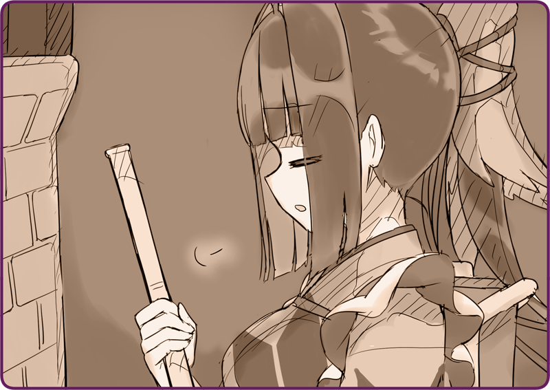

Tôi chẳng nhớ nổi mình đã thở dài bao nhiêu lần trong hôm nay rồi nữa.
Cầm chổi trên tay, tôi quét dọn cả cái sàn giả gỗ chẳng biết đã được bao nhiêu năm tuổi rồi. Ở Đại lục thì không cần phải cởi giày trước khi vào nhà; phong tục này khiến người phương Đông nào lần đầu biết tới cũng không khỏi bối rối. Hẳn là do thời tiết ngoài kia còn rất lạnh, nhưng tôi thật lòng mong họ nghĩ cho người quét dọn dù chỉ một chút.
Tôi nhìn lại diện mạo của mình. Một bộ kimono màu lam sẫm mới toanh đồng bộ với màu tóc. Một chiếc tạp dề trắng tinh tươm được là phẳng phiu. Chẳng có điểm nào giống với bộ quân phục tôi từng mặc trước kia.
Tuyết rơi phủ kín bên ngoài cửa sổ. Tôi còn thấy được cả đường chân trời xa xăm. Nơi đây nằm cách Mặt trận Tây Nam Altaria mà Karasuba tôi từng phụng sự khoảng một trăm mấy chục kilômét, là một hòn đảo nhỏ thuộc vùng duyên hải mang tên quần đảo Helena. Xem ra quân đội đã thuê những ngôi nhà trống tại đây để dùng làm sở dưỡng thương.
Nagi: “Tôi về rồi.”
Cánh cửa bật mở, một người có khuôn mặt thanh tú bước vào.
Nagi: “Tôi về rồi đây, Karasuba.”
Tôi vẫn có hơi khó chịu khi bị gọi bằng cái tên ấy, nếu không muốn nói là bất mãn.
Nhưng mà, tôi là một
Hình nhân Tự hành.
Dù trong tâm có bất bình cỡ nào, chỉ cần là mệnh lệnh thì phải phục tùng.
Chính vì thế, tôi gọi người đó như vậy.
[Chủ nhân] là người sở hữu Hình nhân, đồng thời cũng là người duy nhất được quyền ra lệnh cho tôi, và Hình nhân có nghĩa vụ phải nương theo ý của chủ nhân để thực hiện mệnh lệnh… bất luận nó nguy hiểm đến đâu chăng nữa.
Hình nhân là như vậy đấy.
Nagi: “Gọi tôi là Nagi-san là được rồi.”
Nagi: “Tại coi bộ em không thích cách gọi kia cho lắm.”
Nagi: “Hình thức quá nhỉ.”
Nagi: “Làm gì có chuyện ấy.”
Khó chiều ý thật. Chủ nhân nhún vai, rồi cởi áo khoác ra và treo nó lên giá.
Vừa toan bước ra giúp ngài, chợt tôi để ý.
Sàn gỗ vừa mất công lau chùi, giờ đây đã dính đầy những dấu chân đen sì.
Nagi: “Hôm nay trời khá ấm mà, nên tuyết hơi tan một tí. Karasuba cũng ra ngoài một chút xem sao?”
Nagi: “À, thế thì cho tôi xin lỗi. Hình như tôi để bàn chải ở đây thì phải…”
Nagi: “Không có à… hay ở trong phòng ngủ nhỉ?”
＊ ＊ ＊
Tôi chẳng nhớ nổi mình đã thở dài bao nhiêu lần trong hôm nay rồi nữa.
Tôi kê chiếc ghế dài ra sân trước và tiến hành cọ những vết bẩn trên ủng. Tôi dùng bàn chải cọ thật lực, rồi dùng vải thừa lau sạch hơi ẩm trên đó. Sau hết chỉ còn việc dựng ủng lên chờ khô nữa thôi.
Nagi: “Em thạo việc quá đó chứ.”
Mải làm việc, tôi không nhận thấy chủ nhân đã đứng cạnh mình từ bao giờ.
Nagi: “Em ăn một chút không?”
Tôi bóc tấm bọc bằng da. Bên trong đầy những thứ quả nho nhỏ màu đỏ không rõ tên.
Nagi: “Là tầm xuân đấy, tôi mua được từ một bác nông dân. Thứ này nghe bảo dù bị vùi trong tuyết vẫn có thể ra quả. Dùng làm trà thảo mộc hay để thế ăn ngay cũng đều ngon hết.”
Nagi: “Bên trong giàu dầu lắm, mà em ăn một tẹo cũng có sao đâu.”
Nagi: “Tiếc thật đấy. Hình như thứ này tốt cho da lắm mà… Ồ, cũng không tệ.”
Người ấy cho cả quả vào miệng và bắt đầu nhai.
Nagi: “Sao thế?”
Nagi: “Thay đổi một chút cũng hay mà ha?”
Nagi: “Dù rằng chưa kịp đem cái gì về thì em đã nát vụn mất rồi.”
Nagi: “Thành ra cuối cùng tôi phải đưa em về sửa chữa.”
Nagi: “Không đâu, em vẫn chưa được sửa xong mà.”
Nagi: “Có vẻ, em đã bị ép làm những chuyện vô lý rồi nhỉ.
Nagi: “Trận Kaza đó ngay từ đầu đã đi quá xa rồi. Chỉ duy nhất một Hình nhân Tự hành điều khiển 1.200 Hình nhân Cơ khí. Mà hình như còn không có thợ Hình nhân nào nữa, đúng không?”
Nagi: “Em… các em, đã cố gắng hết sức rồi.”
Nagi: “Chuyện đó thì không được.”
Nagi: “Vì em vẫn đang bị hỏng mà.”
Ngài ấy dịu dàng xoa nhẹ vào hai bên thái dương của tôi. Những ngón tay của ngài thật dài và thon gầy.
Nagi: “Để sửa được em sẽ mất chút thời gian. Mà tôi cũng không hề yêu cầu em làm việc nhà hay gì cả. Tôi muốn em nghỉ ngơi một chút kia, giống như tôi này.”
Nagi: “Tôi đang nghỉ phép. Nhưng mà, cứ thế xả hơi thì chẳng hợp với tôi cho lắm.”
Nagi: “Là như thế đấy. Bằng không, em sẽ mãi mãi bị vứt xó trong nhà kho quân đội mất.”
Nói vậy chẳng lẽ ngài ấy sửa tôi chỉ để giải trí thôi sao?
Nếu không có ngài mó tay vào, có lẽ giờ tôi đã là một phần của bãi sắt vụn rồi cũng nên. Một tình thế không thể tồi tệ hơn.
Nagi: “Tạm thời em cứ thích làm gì thì làm đi nhé.”
Sau khi từ tốn dùng bọc da gói lại chỗ tầm xuân, ngài ấy đứng dậy và đi mất.

 “Ngài có nói sao đi nữa, thì vai trò cội rễ của em vẫn là Hình nhân Chiến đấu. Tháp tùng bộ binh, điều khiển Hình nhân Cơ khí để đem chiến thắng chung cuộc về cho Hoàng Quố—”
“Ngài có nói sao đi nữa, thì vai trò cội rễ của em vẫn là Hình nhân Chiến đấu. Tháp tùng bộ binh, điều khiển Hình nhân Cơ khí để đem chiến thắng chung cuộc về cho Hoàng Quố—”